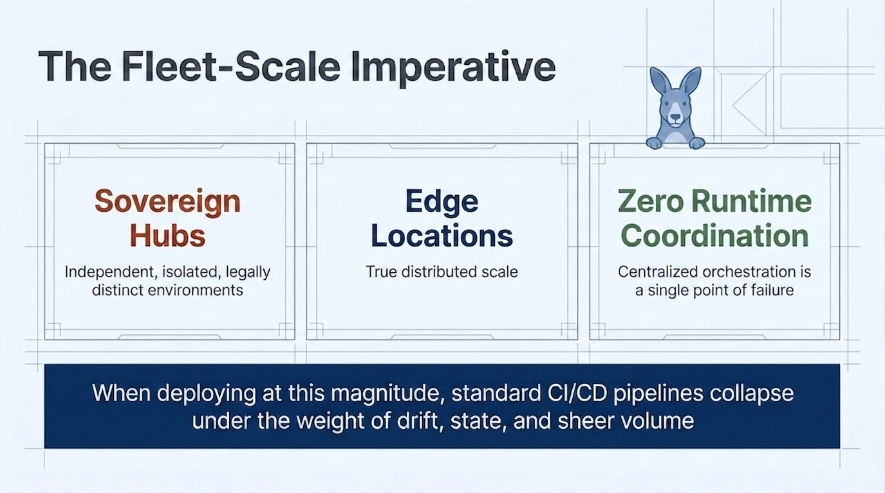
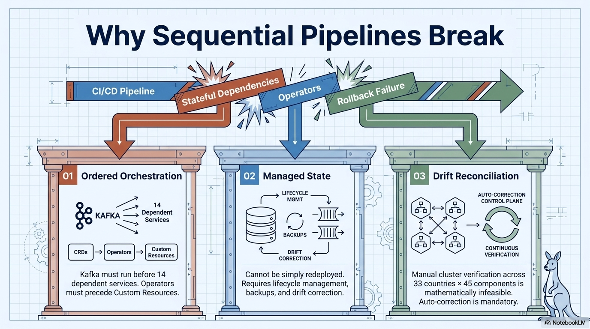
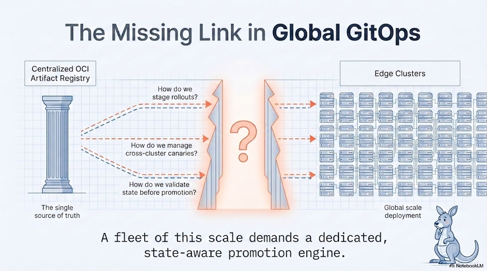
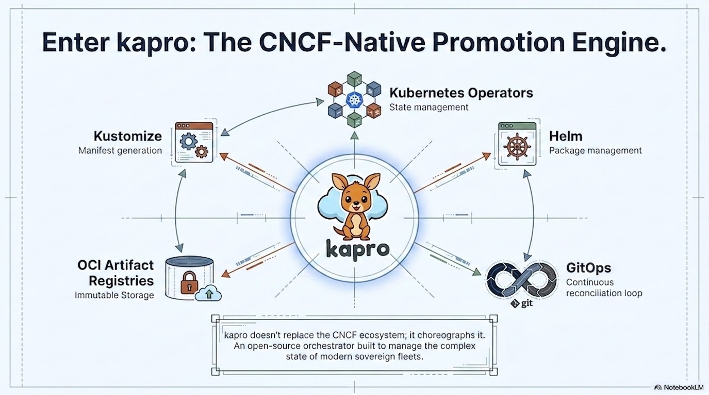
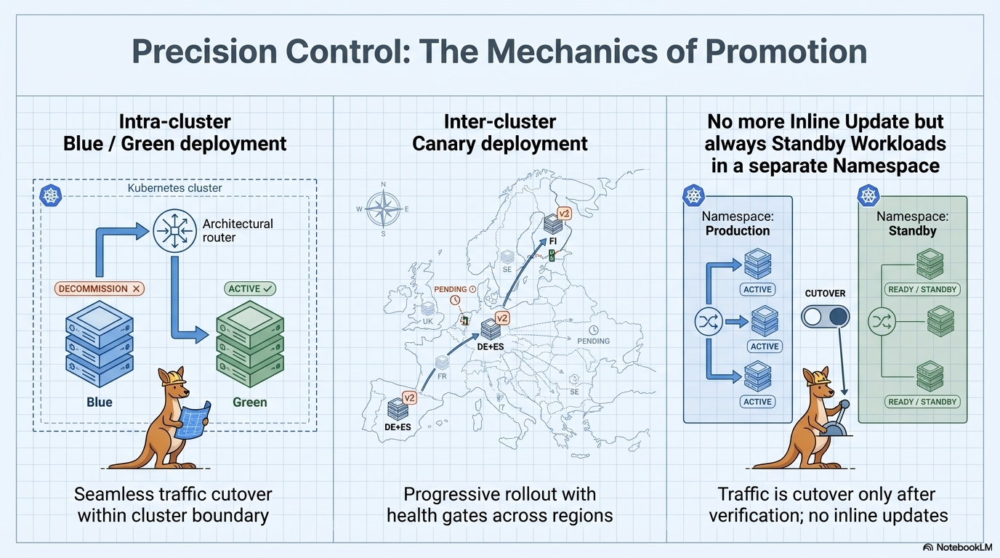
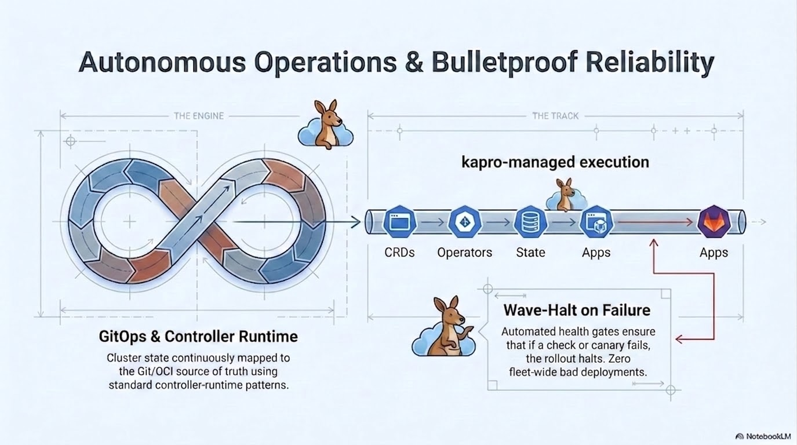

Cloud Native · Open Source · Apache 2.0
Kapro
Progressive delivery and promotion engine
for multi-cluster Kubernetes fleets.
Scroll
Progressive delivery and promotion engine
for multi-cluster Kubernetes fleets.
Sovereign hubs. Edge locations at true distributed scale. Zero tolerance for centralized runtime coordination — because centralized orchestration is a single point of failure. When deploying at this magnitude, standard CI/CD pipelines collapse under the weight of drift, state, and sheer volume.

Traditional CI/CD assumes a linear world: build, test, deploy. But when services have strict ordering dependencies, databases need lifecycle management and drift correction, and every cluster must continuously self-verify against its source of truth — sequential pipelines simply cannot express this complexity.

You have a centralized OCI artifact registry. You have edge clusters running Flux, Helm, and Kustomize. But between those two ends, three questions remain unanswered: How do you stage rollouts? How do you manage cross-cluster canaries? How do you validate state before promotion?

Kapro decouples CI from deployment. The OCI artifact becomes the single source of runtime truth — immutable tags only. Any git repo, any CI pipeline can produce it. By making the OCI artifact the contract, CI stops being the deployment orchestrator. Runtime git dependency drops to zero.
Kapro doesn't replace the CNCF ecosystem — it choreographs it. An open-source orchestrator built to manage the complex state of modern sovereign fleets, sitting at the center of Kubernetes Operators, Helm, Kustomize, OCI registries, and GitOps reconciliation loops.


Kapro manages wave-based dependsOn execution across CRDs, operators, state, apps, and ingress. Automated health gates ensure that if a check or canary fails, the rollout halts. Zero fleet-wide bad deployments.

Three deployment patterns that would break every other tool in the ecosystem.
Roll out across clusters in multiple countries and regions. Pilot a small group first, expand in waves, and halt automatically if something goes wrong. Each region reconciles independently — no central coordinator required.
Separate deployment flows per compliance zone. Environment isolation per regulatory boundary, audit trails via signed OCI provenance chains, and mandatory human approval gates before anything touches production.
Progressive rollout to hundreds or thousands of edge clusters. Canary groups get new versions first. Health gates block rollout if error rates spike. Auto-promotion after a configurable soak period.
Kapro sits above Flux, not replacing it, and alongside Kargo as a complementary tool. Kapro focuses on horizontal wave ordering across sovereign fleets; Kargo focuses on vertical pipeline staging across environments.
| Capability | Kapro | Flux | ArgoCD | Kargo |
|---|---|---|---|---|
| Multi-cluster promotion | Native | Manual | App-of-apps | Native |
| Progressive delivery | Built-in | Via Flagger | Via Argo Rollouts | Built-in |
| OCI-first design | Yes | Partial | Git-centric | Yes |
| Sovereign fleet | Designed for it | No | No | Limited |
| Flux compatible | Built on Flux | — | No | Separate |
| Health gates | Pluggable | No | No | Yes |
| Approval gates | CRD-based | No | External | Yes |
Bootstrap a hub, add spoke clusters, define your app and delivery pipeline, push a bundle from CI, and apply a release. Kapro handles the rest.
# Bootstrap a hub cluster kapro hub init --project my-project --cluster my-hub # Add spoke clusters to the fleet kapro spoke add cluster-a --provider gcp-fleet --labels tier=canary kapro spoke add cluster-b --provider gcp-fleet --labels tier=prod # Define your app and delivery pipeline kubectl apply -f kaproapp.yaml kubectl apply -f kapro.yaml # Push a versioned bundle from CI kapro bundle generate --app my-app --version 1.0.0 --push # Create a release — Kapro handles the rest kubectl apply -f release.yaml
Star the repo, read the spec, and join the conversation. Kapro is actively developed and open to contributions.